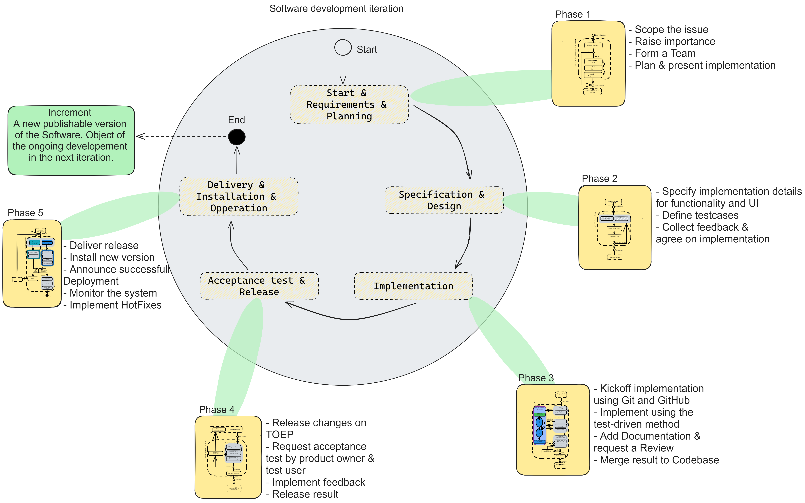
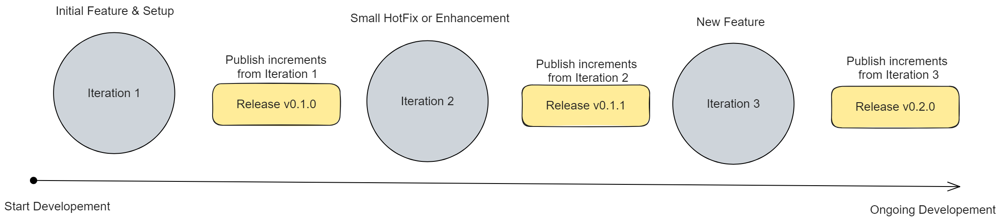
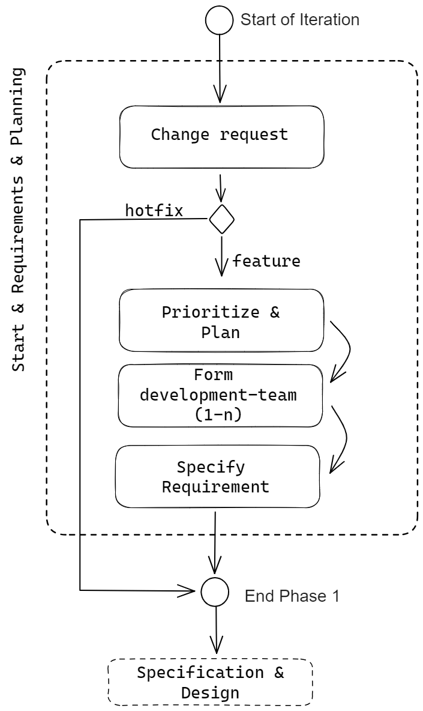
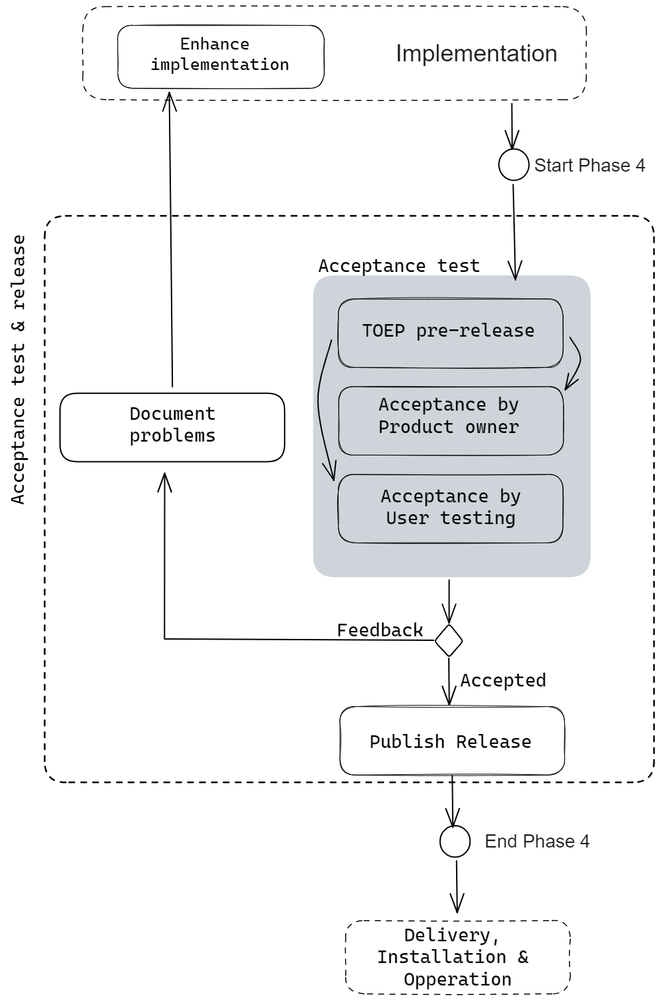

Collaborative Development#
Our concept of collaborative development
Researchers who participate in the development of the Open Energy Family are known as "core developers". Their work involves capturing scientific processes that can be implemented in software, gathering requirements, and developing processes or artifacts such as software code and test results. Additionally, they contribute to the development of specific Family Members, like the ontology, drawing on their expertise in fields such as energy systems. Core developers collaborate with the open community to improve and maintain the software and troubleshoot any issues that arise.
To ensure the transparency and accessibility of the development process, all developments are publicly planned, executed, and documented on GitHub and in development meetings. Core developers also have direct or indirect access to internal systems such as servers that cannot be publicly accessible for security reasons.
While the core developers are responsible for the bulk of the development work, the Open Energy Family is open to participation from anyone interested in contributing. This includes stakeholders such as other researchers in the energy system domain who may not be directly involved in the research projects but have an interest in the tools and services offered by the framework.
As the work of core developers requires significant effort, funding is crucial to ensure their continued participation. It is therefore essential that individuals are deployed as part of a research project that provides adequate funding for their work. By embracing the collaborative spirit of Open Science, the Open Energy Family is able to leverage the expertise and contributions of a diverse range of stakeholders to create a more sustainable and equitable energy system.

Collaborative software development process#
The following outlines how software development is implemented collaboratively in an open-source and research environment. The previously described concept of collaborative development sets the framework for software development here.
The essential components through which software development is carried out include a tailored iterative development process aligned with our requirements and a role concept. These components will be described in detail, but it should be noted that additional practices must be employed to implement development in practice. An example is development using Git and GitHub. For collaboration, we have created detailed guidelines for naming Git branches and templates for issue creation, which are linked to the appropriate locations.
Develope Iterative & Incrementally#
We adhere to the common iterative model for software development and the software lifecycle. In the Open Energy Family, we primarily focus on continuous development of our software, which is developed and further improved in various research projects. For this reason, we view development as a process that must enable organic growth. At the same time, we recognize the need to handle various types of requirements, including fixed and long-term requirements from research projects, as well as flexible and short-term requirements arising either from users or the identification of new requirements during development. Such an approach is described in the literature as a Hybrid Development Model, as we do not exclusively follow an agile approach and do not strictly adhere to the Waterfall model in project implementation.
Our iterative process is presented here as an overview and spans the various phases of the software lifecycle. The result is an increment that is to be understood as a specific version of the software. An increment can be released and serves as the starting point for the subsequent iteration. It is important to highlight the integrated documentation and testing steps. By incorporating these tasks as integral parts of development, we ensure complete documentation, goal-oriented development through acceptance testing, and the functionality of the software at all times.

Over time, the increments are further developed, and an optimal solution is approached. The advantage lies in the fact that each increment is immediately available to all users as a release. This allows for feedback to be incorporated into each subsequent iteration, particularly to ensure user-friendliness.

Going through the phases and the associated effort beyond writing code and releasing software has various advantages. In the short term, it ensures that work is done properly and in line with the agreed-upon requirements for craftsmanship and product. In the long term, it aims to keep the software continuously maintainable and enable further development and reusability. For research, this is a particular focus that contributes to sharing software as research results in a traceable manner and finding synergies.
Below we show all phases in detail. The detailed information is relevant to facilitate teamwork. The goal is to enable a transparent and predictable way of working. Even if the work is not done directly in a team, it is still important to follow the steps to document development decisions in a traceable manner. Working with GitHub as a development platform should be kept in mind. Many additional pieces of information can be documented there, and communication with others is greatly simplified. Communication in development teams and even at a higher level within the entire community or with individuals involved in development should ideally always be up to date. This way, the overall structure of the software architecture should always be known.
Development phases#
In a nutshell, the collaborative software development process defines the approach from the vague idea through getting involved & start planning, testing & implementation to release and finally installation and operation. The aspect of collaborative cooperation is particularly emphasized here, as our software products are freely usable open source software. In the long term, we strive for community-driven implementation during development. In doing so, we are following the idea that the OpenEnergyFamily can be used as a framework for various research projects and thus expanded. The vision is to work together on the implementation of optimal solutions. The community benefits from the freely usable results & infrastructure, the available expertise and the opportunity to contribute its own ideas and thus actively participate in shaping them. We want to follow the Open Science principles.
Phase 1: Start, Requirements & Planning#

Summary
Which goals should be achieved in the 1st phase:
- Requirements are created as informal textual descriptions.
- Information about purpose, users, use cases, functions, priority, and open questions is specified. It is clearly described what criteria must be met for the requirement to be fulfilled.
- For each requirement or related requirements, an issue is created on GitHub and filled out according to the guidelines from an issue template.
- The development project is created as a project on GitHub, and relevant issues are added.
- The development team is assigned to the relevant issues.
Step 1 - Change Request:
Initially, a change request is submitted or created, akin to gathering requirements as a foundation for specifying software development requirements in the final step of this phase.
Communication of a change request typically occurs through GitHub using the ticket system (Issues) or the discussion area. For more complex issues, discussion in a developer meeting is also possible. A change request doesn't need to be qualitatively extensive; the focus is on documenting a need, with specification happening later.
Predefined requirements from research projects and specific user needs (user requirements) are the primary sources for requirements included in most change requests. Other potential sources include simple ideas from the community, considered as user requirements. The difference is that there's no immediate idea about what and how to implement, rather a vague idea that needs more specification.
Errors & Bugfixes
Additionally, addressing software development errors is among the possible change requests. Errors are a special case, as it's not necessary to go through all the steps of the first phase since what needs to be developed is already clear. Generally, errors not caught by automated tests are discovered in user testing (Phase 4) or during software use (Phase 5: Operation). It's crucial to determine whether an error requires new development, as the functionality cannot otherwise be used. In such cases, it may be necessary to complete all phases. However, most errors are of minor scope and can be resolved quickly. Hence, the subsequent steps of the first and second phases can be skipped, and implementation (error correction) in Phase 3 can start directly. This is referred to as a "BugFix."
Once a change request is submitted, especially if it involves a new feature, implementation cannot start immediately. Changes or requirements may also be interconnected. To maintain an overview of all changes during development, prioritization of change requests is done, and the current development project is planned.
Involved Developer Roles:
- oep-community-manager
Step 2 - Prioritization & Planning:
Prioritizing change requests and requirements, planning the current development project, and integrating it into the overarching development roadmap are tasks in that are included in the step. This is crucial for breaking down the long-term development into smaller work-packages, working towards an overarching goal. The roadmap outlines the long-term development plan roughly, providing developers with an idea of the major development goals. Various projects are currently available on GitHub, and future milestones will be created for them.
To prepare for prioritization, all change requests and requirements logged on GitHub as Issues are automated into a backlog. The backlog, a list on GitHub, collects all available requirements (Issues). Subsequently, prioritization is conducted to determine if a change, for example, should be implemented in the Open Energy Platform. If a change request is deemed relevant after prioritization, its placement in the current development workflow is decided. This is necessary when other developments must be completed first or priorities lie in different task areas. If a change request aligns with the ongoing project and can be implemented immediately after prioritization. In this case it is scheduled for an upcoming development project, providing a rough timeframe for development. Occasionally, specific, binding deadlines are set, impacting prioritization – for instance, if a new function is crucial for a research project's work package and must be presented in a meeting.
Requirements can change during development, and new ones may emerge. Therefore, allocating requirements to a specific release is not always fixed. Unimplemented requirements at a release's launch are scheduled for the subsequent release. Planning requirements for a release announces the start of implementation, signaling that the following steps and phases of the development process will be undertaken. The number of iterations for requirement completion is not predefined.
Core developers play a significant role in prioritization, given their need to oversee current and upcoming development steps. The development principle "Release early, release often" is generally followed to promptly showcase users with ongoing developments.
Once it's decided that a change request should be implemented, the next steps can be taken.
Involved Developer Roles:
- oep-product-owner
- oep-expert
- oep-software-developer
Step 3 - Development Team:
Establishing a development team is essential to clearly distribute responsibilities and foster transparency within the community. While individual efforts can implement development projects, it is generally advisable to form a team. This facilitates practices such as the 4-eye principle from Extreme Programming, where implementation is carried out collaboratively, ensuring a constructive distribution of responsibilities. Common team divisions include Frontend and Backend developers or Developers and Domain Experts. A development team takes on various responsibilities, including executing the subsequent steps of the development process, addressing content-related development queries, documenting and communicating the current development status. It is also assumed that a developer or team adheres to the guidelines established for participation in the development. For instance, various documents are provided in each GitHub repository, with special attention to the CONTRIBUTING.md document.
Involved Developer Roles:
- oep-domain-expert-energy-modelling
- oep-ui-ux-developer
- oep-software-engineer
- oep-junior-developer
- oep-expert
Step 4 - Create and Specify Requirements:
This step focuses on specifying the change request from the initial phase. The goal is to develop a coordinated system specification, serving as the basis for the detailed technical implementation. Since the desired changes are broadly known, the next step is to specify what the change request includes in terms of concrete requirements (functional solution).
When a new functionality (feature) is requested with the change request, it is recommended to first establish a consistent naming convention for the feature. This is crucial for referencing the new functionality in communication. For example, in the development of a new feature for the Open Energy Platform, the functionality was named the "Open Annotation Tool."
Assume a specific but broadly formulated change request for the OpenEnergyPlatform: "I need a button to initiate an Open Peer Review." This generates numerous detailed requirements such as "Where is the button visible?" and "Who can activate the button?" Additionally, the process of the Open Peer Review is not clear. Therefore, it is necessary to design the process and adapt it for implementation in a web application. These various detailed or extensive requirements are typically identified in an analysis phase, often involving a brainstorming session with as many stakeholders as possible. The result is the specification of the software system, which is then aligned with the change request to validate that the software system can fulfill the needs of users. Since various stakeholders are involved in this process, and the specification is systematically developed, a coordinated system specification is established.
Involved Developer Roles:
- oep-product-owner
- oep-domain-expert-energy-modelling
- oep-ui-ux-developer
- oep-software-engineer
- oep-junior-developer
- oep-expert
Phase 2: Specification & Design#
(User interface & Software functionality)

Summary
Which goals should be achieved in the 2nd phase:
- If a user interface is part of the development, then a prototype exists. The tool used allows exporting the prototype representation, for example, as an image file in ".png" format. Alternatively, access can be provided through a public link.
- A informal textual and/or visual description of the technical solution is documented in a corresponding issue. It describes which parts of the application are to be expanded, what data is needed, how the processes of the functionalities operate, whether a change to the database is required, whether a new technology is being used, and whether it needs to be installed (e.g., on a new server).
- If adjustments to the requirements are necessary, these are documented in the corresponding issues on GitHub.
- A textually described list of relevant test cases and associated requirements is available. The description is documented in the corresponding issues.
Step 1 - Detailed design:
Below we propose two techniques to provide the design specification for bot the Frontend - like a UI - and the backend functionality.
Prototyping
The prototype is a demonstration model of the application. Prototypes can be created in various forms, such as mockups or interactive clickable interfaces. These are particularly useful for developing and visualizing the design and logic of the user interface. The term "frontend" of the software system is also used in this context. It is often advantageous to specify the frontend first before designing the backend in the technical solution. This is because the demonstration model allows detailed coordination of the functionalities offered to users. This provides important information about the software components needed. Generally, these steps can also be developed in parallel.
Presenting the demonstration model allows verification that the requirements and use cases or user stories will be considered in the implementation phase. Prototyping thus provides a concrete template for development. To create a prototype, the functional solution must be developed beforehand. This involves not only specifying the requirements but also determining which functions or processes can be used, who can use them, what data or inputs are needed, and what outputs are generated. Additionally, decisions can be made regarding which auxiliary information (e.g., tooltips) and error messages should be visible to users. The specified requirements from the first phase serve as a basis, as the use cases are already elaborated there.
Involved Developer Roles:
- oep-domain-expert-energy-modelling
- oep-ui-ux-developer
- oep-expert
Technical Solution
The technical solution for a software system like the OpenEnergyPlatform, or any software application in the Open Energy Family, involves detailed design for developing the backend. This includes creating server-side functions, connecting them to the frontend, and setting up new hardware components.
It's recommended that an architect (such as oep-expert or oep-software-engineer) leads the development of the technical solution. This solution should include designs for the context view (system outline, application, and interfaces), static view (code components and interfaces), dynamic view (system behavior at runtime, especially after user actions), and distribution view (infrastructure details like hardware nodes and software components).
These views are often represented using Unified Modeling Language (UML) diagrams. For instance, context diagrams model the context view, component diagrams depict the static view, sequence diagrams illustrate the dynamic view, and deployment diagrams describe the distribution view.
While modeling is common, it's not mandatory when developing software for the OpenEnergyFamily. Descriptions can be text-based in issues or pull requests, or created as informal sketches.
Not all views need exhaustive descriptions. For example, if working on the Open Energy Platform, existing structures can be leveraged. Describe where changes will be implemented in the existing system (static view), and also explain how the dynamic view is designed. Specify the software packages (e.g., JavaScript or Python) and REST API endpoints used/created.
It is important that developers ensure that functionalities from the backend are accessible through the frontend. As a result is is mandatory that all decisions that are implemented later are documented as some drafts might be revoked during the process.
Involved Developer Roles:
- oep-software-engineer
- oep-junior-developer
- oep-expert
Step 2 - Test Cases:
During the elaboration of the detailed design, it is beneficial to create specific test cases for certain use cases. Previous developments in the Open Energy Family have shown that test cases can be defined when planning the detailed design. In modern development processes, literature indicates that establishing test cases is often linked to traceability to requirements (Testim, 2021). This means that test cases not only verify functions from the code but also check the fulfillment of requirements. This approach can also be applied here, especially since it is already known at this stage how the specific processes should be structured and what data structures (input-output) are available.
So far, test cases have mainly focused on testing through unit tests (Hildebrandt, 2022), where Python classes or functions in software tools or the backend of the Open Energy Family are tested. This type of test case is at least required for implementation. Testing the entire system through integration tests (Vocke, The Practical Test Pyramid, 2018) should also be planned here, for example, if a software component depends on another component in the system.
Test cases for the frontend should also be planned. However, these should be considered as manual tests and will be conducted by a tester in a later step (Phase 4: Acceptance Testing) on the Test Open Energy Platform.
Involved Developer Roles:
- oep-software-engineer
- oep-junior-developer
Step 3 - Design Approval:
Before the phase can be concluded, the results from the detailed design are evaluated in an approval process. This assessment considers whether the requirements are implemented in the design, whether the design is appealing and user-friendly, and whether the technical solution is consistent. Additionally, the adequacy of the planned test cases can be discussed. Deficiencies are communicated to the responsible development team, and the detailed design is adjusted accordingly.
The design approval process typically takes place in developer meetings, with GitHub being used for minor inquiries. If it is decided in the approval process that all aspects of the detailed design meet the requirements, the next phase of implementation can commence.
Involved Developer Roles:
- oep-product-owner
- oep-ui-ux-developer
- oep-software-engineer
- oep-expert
Phase 3: Implementation#

Summary
What goals should be achieved in Phase 3:
-
A development branch is created for the implementation. The branch name includes the specification of an issue ID, allowing for a clear association with an issue on GitHub. The development branch is compatible (no merge conflicts) with the base development state of the software.
-
A pull request is created for the development branch on GitHub. The development team is assigned to the pull request, and a reviewer is designated.
-
The test cases and source code for all functionalities are included in the development branch. The implementation of the user interface is also available. Changes are available as small Git commits (code check-ins) in the development branch. Individual commit messages are uniquely associated with a requirement through the issue ID.
-
The test suite available in the relevant repository on GitHub is executed without error.
-
All changes, such as new functionalities, fixed bugs, or modified functionalities, are briefly described in an overview in a changelog document and made traceable by specifying the pull request ID.
-
A review has been conducted in the pull request, and all comments are either addressed in the implementation or documented as issues on GitHub.
-
The pull request and thus the development branch have been merged with the base development state.
Step 1 - Start:
This section is the initial step for each development. It involves two simple but crucial steps to create a dedicated branch for development, allowing simultaneous work on different projects and transparently documenting progress on GitHub. Automation through continuous integration (CI) on GitHub ensures that each code change is tested for technical functionality. The process involves creating a development branch using Git, ensuring synchronization with the current code state on GitHub, and then initiating a Draft Pull Request on GitHub to make the development public. After implementation, a review is conducted, and the changes are merged with the main branch (develop-Branch). GitHub provides two types of Pull Requests: a Draft indicates ongoing development, and it can be converted to a final one when ready for review. Comments, commits, and linked issues help document and trace changes. The individuals involved are listed to define responsibilities.
Involved Developer Roles:
- oep-ui-ux-developer
- oep-software-engineer
- oep-junior-developer
Step 2 - Implementation:
In the implementation phase, we bring the previously planned Frontend and Backend of the Open Energy Platform to life based on the specifications. This involves turning the source code and user interface into a working system. When adding new code, we make sure to test each functional part, like functions, using automated tests (Unit Tests) as part of continuous integration. This continuous testing ensures the code is correct and that everything keeps working even after changes, saving time compared to manual testing.
To encourage a good practice, we follow Test-Driven Development (TDD), where tests are written before implementing actual functions. Tests are considered documentation too. Comments in the code, especially in the Backend and Frontend, are essential for explaining how things work. These comments should cover details about each function or class, entire code modules, and individual variables.
If both the Frontend and Backend are part of the project, the order of development can vary. For example, a developer might start with the Frontend, implementing it based on an agreed prototype without connecting it to the Backend. Later, the Backend is implemented and connected to the Frontend. Alternatively, a developer could work on tests and functionalities in the Backend before the complete Frontend is available.
For effective collaboration, developers might work on smaller pieces, like individual functions in the Backend. Once these functions are ready, the corresponding part is implemented in the Frontend. This allows for incremental development in multiple iterations.
To organize data for new features, we create a structure, like a data model, in advance. This helps us figure out what data we need before actually implementing it. The data model serves as a guide, ensuring that the data is structured systematically.
Throughout the implementation, we regularly check in our code on GitHub. Each check-in (commit) includes a message explaining the changes. This practice helps with error detection and contributes to thorough documentation and a detailed development history.
After the implementation is considered complete by the responsible developers, the next step will be summarizing the changes and reviewing the results.
Involved Developer Roles:
- oep-ui-ux-developer
- oep-software-engineer
- oep-junior-developer
Step 3 - Review changes:
In the first step of the review process, developers should determine whether all intended changes have been implemented. The implemented changes are summarized and documented in a GitHub document. For this purpose, a changelog is maintained, which must include a brief entry for each change to the software. During the review by another person, it can be checked whether the changelog contents implement the requirements from the development project and whether the entry is traceable and connected to the requirements (issues). Additionally, it should be checked that new dependencies on external libraries are documented. For example, JavaScript libraries should not be loaded from an external source on the Internet but should be directly placed in the static files of a Django app. Python packages are documented in a repository document with the specified version.
Once the changes are documented, in the second step of the review, developers request a review. To do this, the status of the Draft Pull Requests on GitHub is changed to a Pull Request. Furthermore, a reviewer is requested, or it is communicated that a review is necessary. Communication occurs through GitHub by assigning GitHub users and through comments in the pull request. Additional communication channels can also be utilized.
Following this, in the third step of the review, a review of the implementation results is conducted. The review is carried out by an expert or software developer (see the role system). The results are communicated on GitHub through a review function. The focus here is on reviewing the technical aspects of the implementation, while also checking the content. It should be noted that some technical requirements are already checked by the CI, and it should not be assumed that the software does not work. The specific process for conducting a review is not strictly prescribed.
In general, the review first ensures that the collaborative development guidelines are followed. This includes working with Git and GitHub, the form of communication, and the documentation of implementation details on GitHub and in the code (e.g., docstrings). Subsequently, it is checked whether the requirements are actually implemented. This involves examining whether the functionalities and processes in the backend are implemented as expected. In the frontend, it is checked whether the implementation is in line with the prototypes and whether visible elements, such as buttons, function as expected.
Additionally, the code quality is checked. If shortcomings are identified, they can be addressed directly or at least an issue can be created, documenting the problem area.
The following are some specific examples of issues that may be identified during a review. For instance, URLs should not be inserted as static text in the code; instead, Django-compliant functionalities should be used to dynamically determine a URL. If a URL changes, the static URL would otherwise need to be manually adjusted. Similarly, passwords should not be visible. Other aspects that must be considered in the review include changes to the database. For example, in the development of the Open Energy Platform, a change to the persistence layer occurs when, for instance, a data table is created; in this case, a migration (script describing the change to the database) must be generated and available on GitHub. If this is not the case, the changes are opaque to others and cannot be applied to the database. Migrations must always be complete, as every small change generates a new migration. Often, only the latest migration is considered, leading to the migration no longer being backward-compatible. This can result in problems when working at different development stages.
Involved Developer Roles:
- oep-ui-ux-developer
- oep-software-engineer
- oep-junior-developer
- oep-expert
Phase 4: Acceptance test & release#

Summary
What goals should be achieved in Phase 4:
- The result of the implementation is installed in a pre-release in a test environment (e.g., TOEP) under real conditions. The development is evaluated through user acceptance testing. Product Owners test from the project team, and external users test in user testing. Errors, unimplemented requirements, or general comments are documented on GitHub as issues or in a discussion.
- Errors are addressed by the development team.
- The software's release procedure, documented in the respective GitHub repository, is completed.
Step 1: Acceptance Testing:
In this section, the new development state is delivered in the first step after merging the development branch with the base development state. This is referred to as a pre-release, and for the first time, the results are installed under real conditions, for example, on the web server of the Test Open Energy Platform (TOEP). It should be noted that this step explicitly refers to the Open Energy Platform. The software tools of the Open Energy Family are tested by installing them on a computer.
To perform the installation, an infrastructure manager must be involved. Only developers with the necessary access permissions have access to the TOEP infrastructure. For instance, in a developer meeting, it is communicated that a new pre-release is needed. Typically, individuals who either have the necessary permissions or know the relevant people participate in such meetings. The team "oep-infrastructure-manager" can be addressed in GitHub communication. In both cases, the installation should be carried out shortly thereafter.
Subsequently, the actual user acceptance test can be conducted in two further steps. Once the TOEP website is updated, Product Owners, users, and testers should be encouraged to test the new changes. The duration of these two steps can vary significantly. It is recommended to set an end date after which the subsequent steps will be initiated. From the experience of completed development projects, short timeframes of a day, as well as longer ones of a week, have proven effective.
Product Owners are again addressed through a development meeting or the GitHub team "oep-product-owner." Individuals in this group understand the requirements and already have expectations on how the changes should be used. Therefore, they are well-suited to verify whether the results align with the planning expectations. Users can be reached on GitHub through the team "oep-tester." Additionally, if possible, other channels such as personal contacts should be utilized to involve additional potential testers. This group usually has different expectations as detailed information about the changes is not known in advance. They are particularly suitable for testing usability, such as determining whether a new button is easily found or a process is understandable.
Involved Developer Roles:
- oep-expert
- oep-infrastructure-manager
- oep-product-owner
- oep-tester
Step 2 - Documenting Issues:
During user acceptance testing, issues such as software errors, usability problems, or missing requirements may arise. In such cases, it's crucial to document all issues first. The GitHub ticket system (Issues) is used for this purpose. Creating a discussion on GitHub is also recommended to collect feedback. Subsequently, the issues can be summarized, and new ones can be created. Depending on the severity of the issues, adjustments to the implementation may begin either immediately or later. If issues can be fixed right away, the development process returns to the implementation phase. Changes are implemented in a new development branch and then rechecked.
Involved Developer Roles:
- oep-product-owner
- oep-tester
Step 3 - Publishing a Release:
If all changes are accepted, meaning they have been tested without issues, the release procedure can commence. This involves following a procedure documented in the Open Energy Family repositories in the document "RELEASE_PROCEDURE.md." In summary, the procedure entails creating a release on GitHub, updating the software version number, updating the changelog, and finally, publishing the release.
Involved Developer Roles:
- oep-product-releaser
Phase 5: Delivery, Installation & Operation#

Summary
What goals should be achieved in Phase 5:
- The newly released software version is installed on the target system. The software is publicly accessible for users.
- Additional errors have been addressed through HotFixes, and the version number of the release is adjusted.
- The operation of the software is ensured and regularly verified. There is a discussion on GitHub where users can provide feedback on new functionalities and errors.
Step 1 - Delivery:
In the first section, the previously released software is delivered. Delivery has been possible in two forms. On one hand, software tools are automated for delivery. This is feasible as delivery occurs to a package index, an external platform where software packages can be uploaded. To retrieve the package later, it is downloaded from the package index. For example, software tools developed with Python are uploaded to the Python Package Index (PyPi). PyPi provides open interfaces through which automated delivery can be implemented.
A new software version of the Open Energy Platform cannot be delivered automatically for security reasons. The necessary interfaces are not available over the internet. Consequently, delivery in this case is done manually. Once a software release is published, an infrastructure manager copies the release version from GitHub to a directory on the Open Energy Platform's web server. Subsequently, the software can be installed.
Involved Developer Roles:
- oep-infrastructure-manager
Step 2 - Installation:
In this section, a distinction is made between the Open Energy Platform and the software tools of the Open Energy Family. The delivered software version is installed for each.
Installing the software tools is generally straightforward due to the use of the package index. A specific command must be executed to install the package along with all dependencies (other necessary software packages). This step is also followed when installing the software dependencies of the Open Energy Platform. Subsequently, it may be necessary to perform a system configuration. Usually, after installation, starting the application is possible.
The installation of the Open Energy Platform is more complex and involves multiple steps. First, it is determined whether it is necessary to expand the infrastructure. In this case, a new server may need to be provided, on which a software or part of the software system is then installed. This step can also be complex and is not detailed here.
Typically, infrastructure expansion is not required, and the next step, installing dependencies, is carried out directly. This involves installing the dependencies of the Open Energy Platform's software system. Again, the package index described above is used. Subsequently, it is necessary to execute some management commands. These commands are used, among other things, to install new database migrations and collect static files. Various additional commands may be added here, which are not described in detail. Afterward, the software system or the Django application is started and is available on the internet for users.
Involved Developer Roles:
- oep-infrastructure-manager
- oep-expert
- oep-software-engineer
Optional Step - HotFix:
If a new error is discovered in the installation section, it can be addressed through an expedited process known as a HotFix. This allows for bypassing all phases of the software development process. Accordingly, the development of a HotFix begins in the implementation phase. A Git branch is created, a test case is established if necessary, and then the required source code is implemented. Subsequently, the branch can be directly merged with the release without the need for extensive user testing or approval from a Product Owner. Following this, the version number of the release on GitHub is adjusted, and the release is delivered and put into operation again.
Involved Developer Roles:
- oep-expert
- oep-software-engineer
Step 3 - Operation:
Once the application or software system is successfully operational, three key areas are relevant for monitoring operations. The goal is to detect errors early and keep the software application or system operational. As outlined in the introduction to this section, we consider both the short-term operation of software tools on a user's computer and the long-term or ongoing operation of the Open Energy Platform on managed infrastructure. Even as a new software version is put into operation, development can continue in subsequent development iterations.
Operation primarily involves the steps of "Monitoring," "Logging," and "Collecting User Feedback." The focus is on continuously gathering various information about the application's state and user experience during runtime.
In Monitoring, aspects such as the application's memory usage or the availability of services in a software system are observed. For example, if the Open Energy Platform experiences long response times (several seconds) for requests, this is captured in the monitoring, signaling that response times exceed a threshold. This enables early troubleshooting. Ideally, there is a real-time monitoring system providing necessary information for debugging.
Logging is used to document or log information like successfully generated documents or executed accesses to network nodes. In case of an error, the log can help identify where it occurred. It is crucial to ensure that all relevant information is actually recorded in the log. For instance, capturing the timestamp of the log entry is sensible.
Collecting user feedback is an ongoing task during operations. Users must have an accessible channel to submit change requests or experience reports. The Open Energy Family uses the GitHub ticket system, developer meetings, emails, or conferences for this purpose.
Involved Developer Roles:
- oep-infrastructure-manager
- oep-expert
- oep-software-engineer
- oep-product-releaser
Post-Iteration Decision#
After completing a development iteration, a decision must be made on whether the software will continue to be developed or if decommissioning is necessary. Continued development also includes ongoing operation, so it's not strictly about developing new features in the subsequent iteration. It's also about maintaining the operational capability of the software in the long term. When software is decommissioned, operations are halted, or no further developments are released. For example, it is foreseeable that the Open Energy Platform will be developed in the long term. A sustainability concept has been developed, specifying that the technical operation of the Open Energy Platform will be demonstrated at the current location at least until 2035.
In the past, some components have been decommissioned or replaced. The software tools of the Open Energy Family are also intended for long-term development, but it may be more likely that individual tools are decommissioned. In such cases, they are likely to be replaced by an alternative software since the use cases will probably persist independently of the specific implementation.
Therefore, it can be assumed that ongoing development is always the goal, but meaningful changes (decommissioning, replacement) to the software infrastructure can be made at any time to ultimately improve it.
GitHub Teams#
We have specific Softwaredeveloper Roles which are implemented as GitHub Teams
to coordinate the development.
They can only be seen by members of the community.
Below, we present a comprehensive overview of all teams dedicated to the developement of software and provide clarification on the identified responsibilities for each role.
In addition to clarifying the responsibilities, we leverage teams to enhance communication. This is particularly effective on GitHub, where users can mention teams in issues, discussions, or pull requests to reach a group of individuals and increase the likelihood of receiving prompt responses. To contact a specific team, use "@" followed by the team name.
To apply for contribution, please get in touch. Take a look at our contact information.
| Team | Responsibilities | GitHub Rights |
|---|---|---|
| oep-domain-expert-energy-modelling | - Answers domain-specific questions - Ensures that functionalities solve or support domain-specific problems |
Read |
| oep-community-manager | - Moderates issues and discussions - Enforces the "Code of Conduct" and "Contributing" guidelines - Maintains the guidelines |
Triage |
| oep-product-releaser | - Enforces release guidelines - Publishes GitHub release - Ensures a release is delivered - Maintains the documentation of changes and the release procedure |
Maintainer |
| oep-product-owner | - Knows the vision and mission of the overall project - Knows the product - Accepts or rejects changes |
Admin |
| oep-ui-ux-developer | - Ensures usability and user experience aspects are implemented - Assists in creating mockups or general design tasks such as graphics, logos, icons, etc. |
Write |
| oep-software-engineer | - Can independently carry out development according to guidelines - Participates in the planning of ongoing development - Mentors junior developers and provides general technical support - Knows the architecture of at least one software product in the Open Energy Family - Conducts code reviews |
Write |
| oep-junior-developer | - Has little or no experience in software development and the Open Energy Family - Wishes to contribute to development in the short or long term - Has basic programming knowledge |
Write |
| oep-expert | - Knows the entire system: all products, especially the software products of the Open Energy Family, including the current architecture and usage, as well as planned developments - Understands dependencies and can assess the impact of changes - Has the final say in development decisions, such as which technology to use, which standards to follow, which pattern to implement |
Maintainer |
| oep-infrastructure-manager | - Implements and operates the CI/CD pipeline and assists in troubleshooting and log analysis - Installs new software versions on a server (after a GitHub release) - Installs new test software version on a server (before a GitHub release) - Manages the installation and operation of all other software tools such as documentation tools |
Admin |
| oep-tester | - Tests the software, for example, once a test release is published - Continuously checks the functionality of the software products - Continuously checks the content, such as texts in training courses or texts on websites, etc. |
Read |